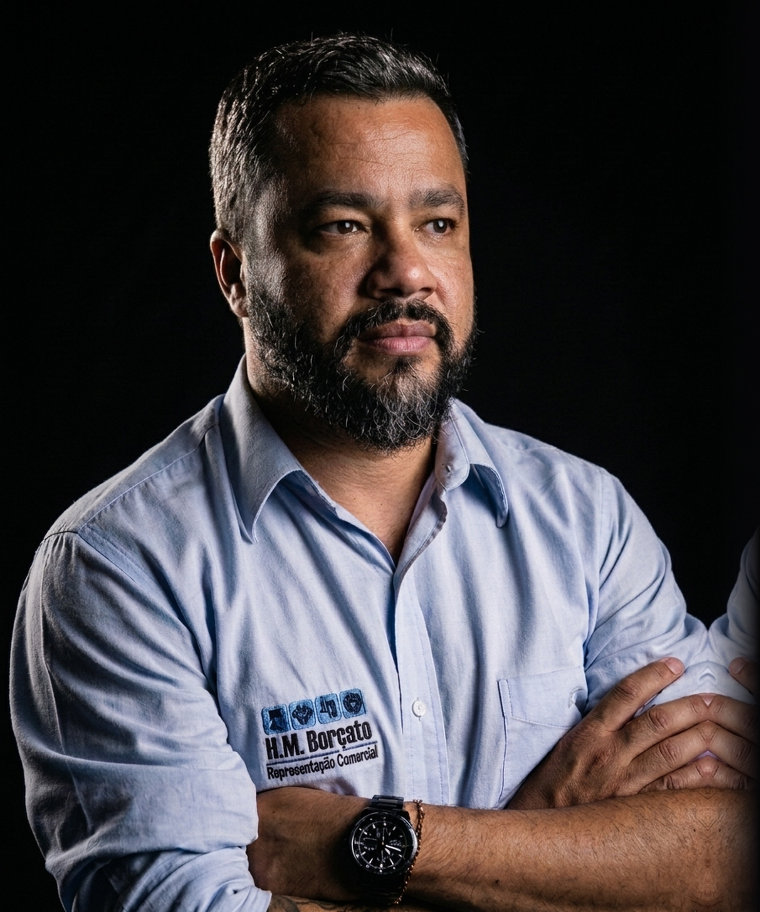
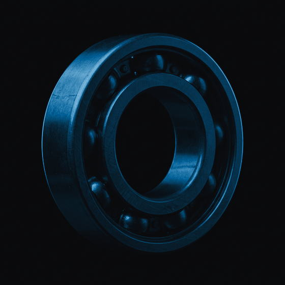

Cinco formas de uma cena do Borçato virar a próxima. Cada uma roda aqui sozinha, fora do site, com as fotos, as marcas e o mapa reais. Role devagar, e role de volta: toda passagem funciona nos dois sentidos. A passagem das peças para o mapa não está aqui porque fica como está.
O Fábio não vende uma peça: ele representa onze indústrias que, juntas, cobrem o carro inteiro. Aqui isso vira imagem. O carro começa vazio, desenhado como projeto técnico. Conforme você rola, cada indústria traz a sua peça, que encaixa no lugar dela. Na última, o carro está completo e para um instante. Depois ele se abre, e as peças seguem para as oito regiões de Minas: da fábrica à estrada. Role de volta e o carro se remonta.
Onze indústrias. Um carro inteiro.
Da fábrica à estrada. Oito regiões de Minas.
A foto do hero está recortada na cápsula, a forma que o cliente escolheu. Ela cresce até ocupar a tela e vira a cena de A Casa. Hoje aparecem dois retratos do Fábio ao mesmo tempo nesta passagem; aqui ele é um só, do começo ao fim.

Desde 2018 · Belo Horizonte
A H.M. Borçato nasceu em setembro de 2018, em Belo Horizonte. A experiência, porém, começou muito antes.
O título do capítulo diz "onze indústrias na mesma pasta". Então as marcas começam guardadas numa pasta, como a do representante na visita, e se espalham uma a uma, em ordem, quando você rola.
Primeiro as indústrias. Depois, o que cada uma coloca na estrada.
Hoje, entre a esteira e o palco, passa um quase vazio. Aqui a câmera entra no cartão da NTN-SNR: os vizinhos ficam para trás, o cartão vira o palco e a peça que a marca fabrica aparece lá dentro.
Rolamentos · NTN-SNR

A rota pelas oito regiões de Minas termina no Triângulo. Aqui ela não para: o traço segue e desenha as letras H.M., que engrossam até virar o nome. A empresa nasce do caminho percorrido.
O nome da empresa é uma homenagem aos dois filhos do sócio-fundador, Henrique e Mateus, e ao nome de sua família.
As letras H.M. viram uma janela: através delas já se vê o Fábio. A câmera entra pela haste do M até a foto ocupar a tela, e o contato chega. O nome e a pessoa são a mesma coisa.
O nome da empresa é uma homenagem aos dois filhos do sócio-fundador, Henrique e Mateus, e ao nome de sua família.
(31) 99658-8022
Celular · WhatsAppCada cartão de indústria vira quando você clica e mostra, no verso, a peça que ela fornece, com o link do portal. Clique de novo para voltar. As peças são as mesmas do palco, sem marca visível.
Pode aprovar todas, escolher algumas ou pedir ajuste em uma. Cada uma que você aprovar entra no site sozinha, com medição, sem mexer no que já funciona.